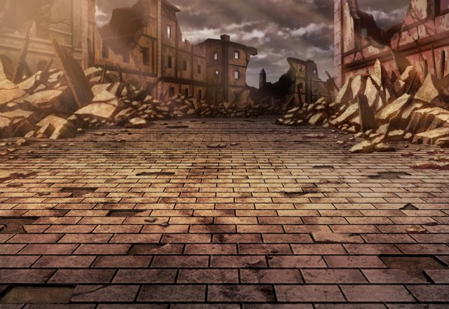

カル
グラデンス爺さんの居場所を みつけてくれたみたいだな。
カル
さっき、パリスが来て 俺たちに伝えていったぜ。
ティリス
私が直接伝えて 驚かせたかったのに～～！
カル
ああ、彼女なら気になることがあるみたいで 先に神の塔に向かうってさ。
カル
まあ、グラデンス爺さんを助けたら 俺がたっぷり話を聞き出してやるよ。
カル
あの爺さん、まだまだ隠してること 多そうだしな。
カル
女神さんの心配事の解決に 少しは役に立つかもしれないだろ。
カル
ハハッ、面と向かってそう言われると 少し照れるな。
カル
まあ、いつも通りってヤツだ。 気にしないでくれ……。
セリア
だから、神の塔には 私が最初に入るって言ってるでしょ！
セリア
なんで私が見張りなんか やらなくちゃいけないのよ！
ルジーナ
頭の悪いバカ女には 丁度いいだろうがよ。
セリア
そんなことも理解できてないから あんたの任務は失敗が多いのよ！
ルジーナ
見張りが大切な仕事ってんなら お前がやればいいだろうが！